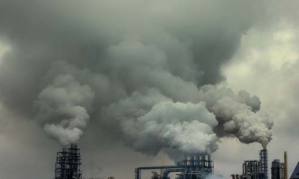

|
||||||||
|
||||||||
|
 化工原料的排放的危害各种化工操作(反应、冷却、加热、蒸馏、蒸发、萃取、吸收、过滤、结晶和熔解)都要排放废液或大量废水，生产装置和包装容器的冲洗过程也有可观数量的废水。化工废水中的污染物，一种是其中含有直接对人体和生物有毒性作用的污染物，如一些重金属和类金属及其化合物酚类和氰类等。1953～1979年间，日本的熊本县水俣湾地区，汞废水污染了水俣海域，鱼贝类富集了水中的甲基汞，人或动物吃了鱼贝后引起中毒。受害人数达到1004 人，死亡206 人。1955～1972 年间，在日本富山神川流域由于镉渣污染引起“痛痛病”患者达280 人，其中128 人死亡。另一种所含污染物不直接造成危害，但导致水中产生色泽、味道、臭味和增加耗氧量，恶化水质间接损害水生生物的存在。如硫化物、亚硫酸盐和亚铁盐等还原性无机物以及能生物氧化和化学氧化的有机物，均大量地消耗水中的溶解氧使水体缺氧，从而造成水体的富营养化。 |
|||||||
Copyright 2019 - 2021 南工院 移动1813 朱妍版权所有